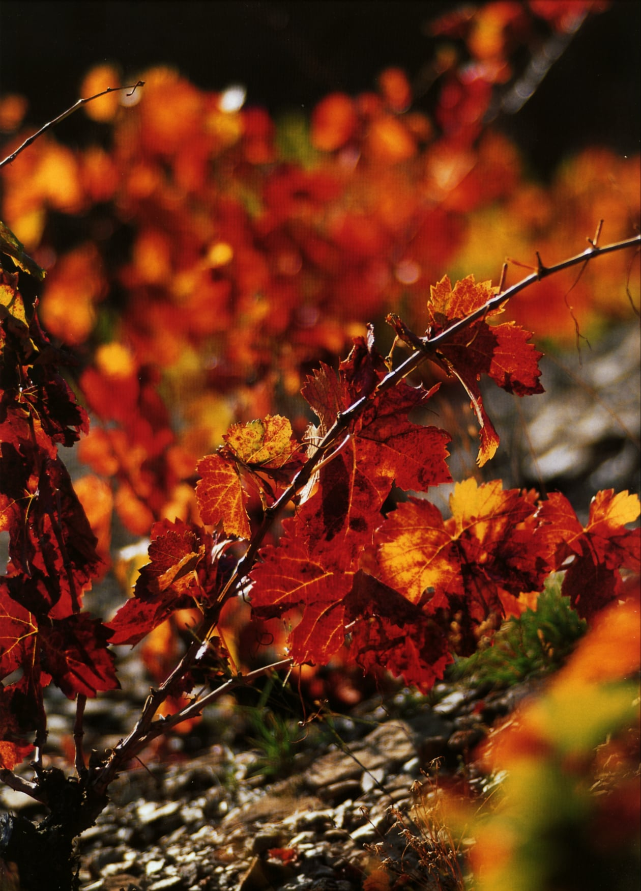
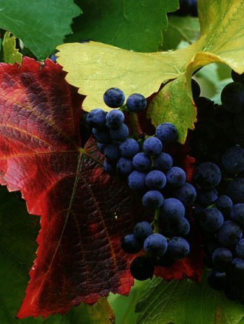
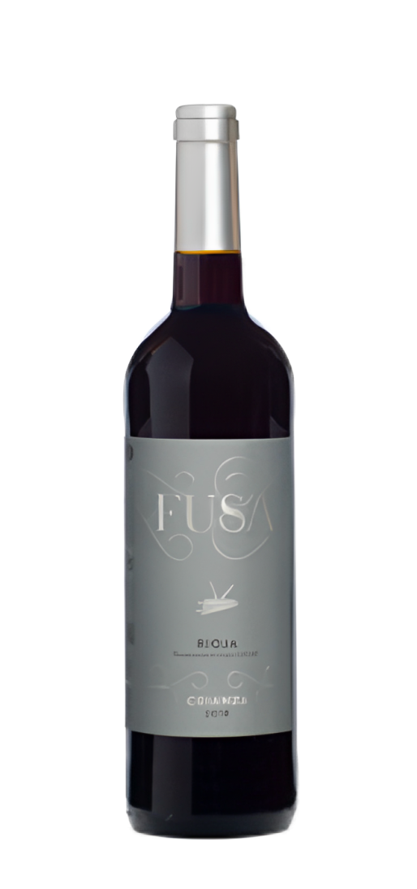
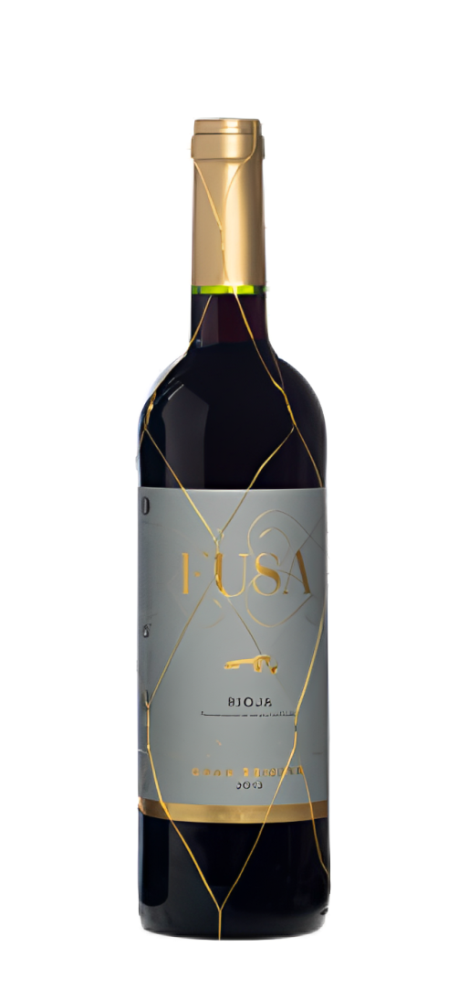

MARQUÉS DE SANTA INÉS
Des de 1998 ha reunit il·lusió i esforç per crear un Grup amb les millors Denominacions d’Origen Qualificades, per poder oferir als nostres amics i clients una selecció de vins i caves d’altíssima qualitat.
Descobreix →
Des de 1998 ha reunit il·lusió i esforç per crear un Grup amb les millors Denominacions d’Origen Qualificades, per poder oferir als nostres amics i clients una selecció de vins i caves d’altíssima qualitat.



CRIANÇA 2019

ALBARIÑO 2021

CRIANÇA 2019

NATURE ROSÉ 2019

BRUT NATURE 2019

GARNATXA BLANCA 2022

CRIANÇA 2018

GRAN RESERVA 2012
 @Marquès de Santa Ines Cellers Artesans
@Marquès de Santa Ines Cellers ArtesansCopyright 2023 - Marqués de Santa Inés